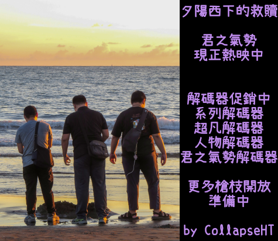
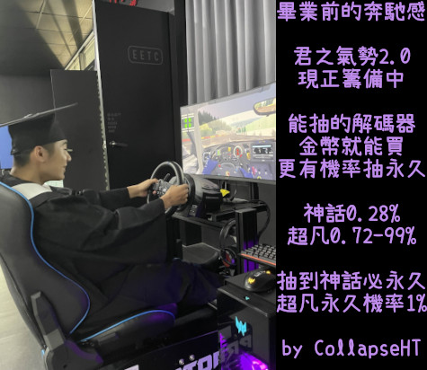

子彈_CS私服
_____
私服載點
radmin-vpn
遊戲本體(約10G,已更新到11/6)
fixstrike.nar更新(約1.7G,最後更新日期:11/6)
如果你是第一次載本體的人:解壓完打開CSOL.bat即可
如果你是更新fixstrike.nar的人:把下載的fixstrike.nar放進Data目錄覆蓋即可
original csol by Giacomo, updated by CollapseHT